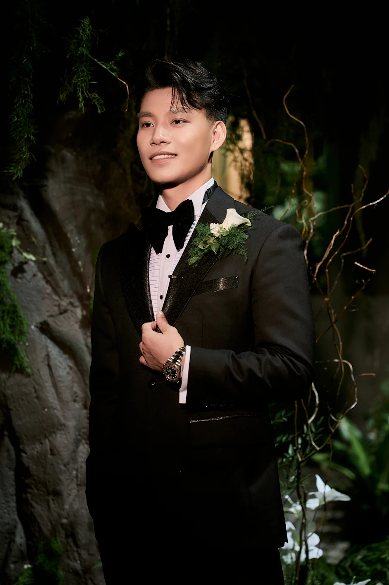

Kisah Kami
Our Love Story

-
2020 · Bertemu
Kelas Keramik di Jogja
-
2022 · Berjalan
Mengejar Senja
-
2026 · Berjanji
Satu Pertanyaan
The Wedding
Memuat undangan
Undangan Pernikahan
Undangan gagal dimuat.
The Wedding of
“Dan di antara tanda-tanda kebesaran-Nya ialah Dia menciptakan pasangan untukmu dari jenismu sendiri, agar kamu cenderung dan merasa tenteram kepadanya, dan Dia menjadikan di antaramu rasa kasih dan sayang.”
QS. Ar-Rum : 21
Mempelai Wanita
&
Mempelai Pria

Hari Bahagia
Menuju hari bahagia
Acara telah berlangsung. Terima kasih atas doa dan restunya.
Our Love Story
2020 · Bertemu
2022 · Berjalan
2026 · Berjanji
Waktu & Tempat
Potongan Cerita
Amplop Digital
Buka undangan dari link pribadi Anda untuk mengirim ucapan.
0 Ucapan